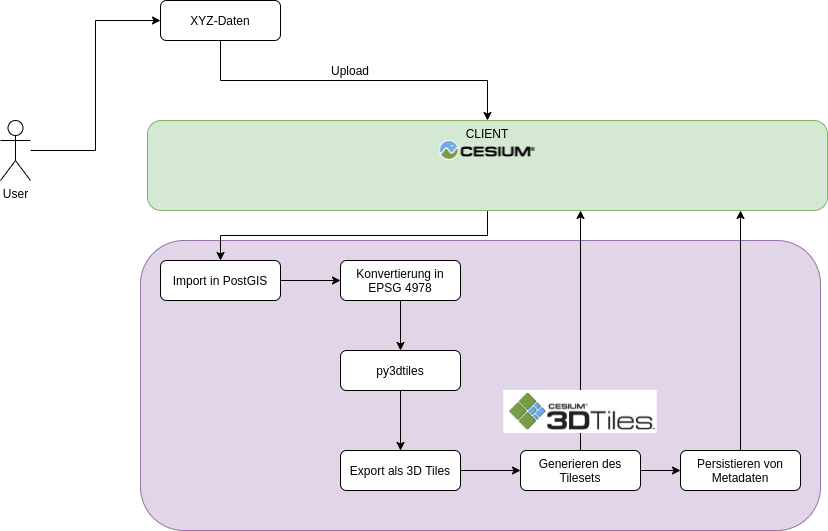

3D-Geoapplikationen mit CesiumJS
Daten, Einsatzmöglichkeiten und Spezifikationen
Michael Holthausen, terrestris GmbH & Co. KG
FOSSGIS 2021, Rapperswil 08.06.2021
Gliederung
- Über…
- Was ist CesiumJS?
- Anforderungen
- Aktueller Entwicklungsstand
- Standards & 3D Tiles
- Verfügbarkeit von Daten
- Einsatzmöglichkeiten & Features
terrestris
- terrestris.de
- OpenSource GIS aus Bonn
- Entwicklung, Projekte & Support/Schulung
- Beratung, Planung, Implementierung & Wartung
Allgemeiner Überblick
Was ist CesiumJS?
- 3D Software-Modell zur Darstellung der Erde oder anderer Himmelskörper
- frei in einer virtuellen Umgebung bewegen
- jeden beliebigen Punkt ansteuern
- Blickwinkel ändern
- über unterschiedliche Skalierung hinein und heraus zu zoomen
- vereinfachte Darstellung der realen Welt
- durch die Zoomfunktion genauere Details
- Darstellung von aufbereiteten Daten in Kartenebenen
- lokal oder externer Server
TODO: Bild herkömmlicher Globus einbinden
- Apache 2.0 Lizenz
- Veröffentlichung über GitHub & npm
- Partizipation möglich
- Community-Support über Forum
- JavaScript, WebGL, HTML 5
-
WebGL TODO: WebGL Logo
- hardwarebeschleunigtes 3D-Rendering mit JavaScript
- basiert auf der bewährten Grafik-API OpenGL
- alle Desktopbrowser
- die meisten mobilen Browser
Anforderungen des Browsers
Aktueller Entwicklungsstand der Bibliothek
- Cesium for Unreal Engine
- grundlegende Unterstützung für das Rendering im Untergrund
- backFaceCulling
- Migration nach ES6 Module
API Funktionen
- Cesium Documentation
- CZML
- JSON basiertes Format
- Punkte, Flächen, Modelle und andere grafische Grundelemente
- Beschreibung einer raumzeitlich-dynamischen grafischen Szene
- Effizientes Streaming & einfach zu parsen
- Hauptsächlich zur Anzeige im Browser über CesiumJS
- cloudbasierter Streaming-Dienst für CesiumJS
- Bereitstellung des Terrain-Datensatzes
- Erstellung eigener Assets
- Konvertierung von Daten in 3D Tiles
Standards & 3D Tiles
- Raster- und Vektordaten im Web (WMS, WMTS, GeoJSON, Shapefile, KML)
- 3D-Modelle: nur Austauschformate zur weiteren Bearbeitung und nicht für Web-Darstellung
- TODO: logo gltf
- "JPEG für 3D"
-
offene Spezifikation für das streamen von umfangreichen
3D-Geodatensätzen
- Gebäude
- Bäume
- Punktwolken
- Hierarchisches Level of Detail
{
"asset" : {
"version": "1.0",
"tilesetVersion": "e575c6f1-a45b-420a-b172-6449fa6e0a59",
},
"properties": {
"Height": {
"minimum": 1,
"maximum": 241.6
}
},
"geometricError": 494.50961650991815,
"root": {
"boundingVolume": {
"region": [
-0.0005682966577418737,
0.8987233516605286,
0.00011646582098558159,
0.8990603398325034,
0,
241.6
]
},
"geometricError": 268.37878244706053,
"refine": "ADD",
"content": {
"uri": "0/0/0.b3dm",
"boundingVolume": {
"region": [
-0.0004001690908972599,
0.8988700116775743,
0.00010096729722787196,
0.8989625664878067,
0,
241.6
]
}
},
"children": [..]
}
}
Daten
- CityGML
- Pipeline Cesium (Cesium Ion)

- Überwachung von Radioaktivität im Meerwasser durch die IAEA
- Identifizierung von Vegetationsüberschneidungen um Strommasten mit LiDAR-Punktwolken durch intel GEOSPATIAL & CESIUM
- Verfolgung des weltweiten kommerziellen Flugverkehrs mit Flightradar24
- swissgeol.ch - Geologische Daten im Web
- Viele weitere Beispiele unter User Stories…
Vielen Dank!
Fragen & Anmerkungen?
Impressum
Autor
Michael Holthausen
terrestris GmbH & Co. KG
Kölnstr. 99
53111 Bonn
holthausen@terrestris.de
terrestris GmbH & Co. KG
Kölnstr. 99
53111 Bonn
holthausen@terrestris.de
Lizenz
Diese Folien sind unter CC BY-SA veröffentlicht.